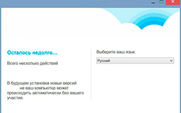
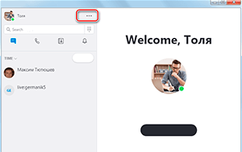
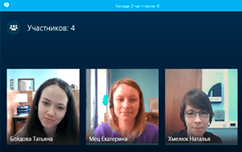

| Категория: | Общение | |
| Поддерживаемые ОС: | Windows XP | |
| Разрядность: | 32 bit, 64 bit, x32, x64 | |
| Для устройств: | Компьютер | |
| Язык интерфейса: | на Русском | |
| Версия: | Последняя | |
| Разработчик: | Microsoft — Skype Limited |
Skype – один из самых популярных мессенджеров для ПК в котором есть видео общение, программа стала первопроходцем и покорителем сферы видео общения именно по его примеру создали в настоящее время множество приложений в котором можно общаться по видео связи. После того как майкрософт выкупил «Skype Limited» скачать Skype для Windows XP а так же для других платформ стало совсем не сложно вы удивитесь но это одно из многих приложений для видео общения которое есть практически на любое устройство хоть то часы от эпл или смарт тв.
|  |  |  |
{kind=link}
{kind=link}
{kind=link}
Скайп для Windows XP на компьютер
Скайп стал популярным во времена когда Windows XP еще не была сильно устаревшей по этому олды помнят данную программу и знакомились с живым общением в том числе с отца всех мессенджеров. Приложение достаточно устарело среди других аналогов на момент 2022 года но все еще не потеряла свою аудиторию.
В видеозвонках вы можете транслировать как картинку с вашей веб-камеры, так и картинку с экрана компьютера. Общаться через звонки можно как с отдельными людьми, так и с целой группой, например, друзей, что очень удобно, если сейчас вы находитесь в нескольких километрах от друг друга. Благодаря серверам Скайпа у вас не вызовет проблем даже общение с людьми на других концах света.
Скайп для версий windows:
Скачать Skype для Windows XP бесплатно
| Приложение | OS | Распаковщик | Формат | Версия | Загрузка |
|---|---|---|---|---|---|
| Skype (Скайп) | Для Windows XP | OpenBox | x32 | Бесплатно (на русском) | |
| Skype (Скайп) | Для Windows XP | OpenBox | x64 | Бесплатно (на русском) | |
| Skype (Скайп) | Для Windows XP | OpenBox | x32 — x64 | Бесплатно (на русском) |
Как установить Скайп:
Запустите файл.
Ознакомьтесь с информацией и нажмите "Далее".
Нажмите "Далее", или снимите галочки с рекомендуемого ПО и нажмите "Далее". Если снять все галочки, рекомендуемое ПО не установится!
После всех шагов нажмите "Установить".
Что говорить о чатах, функционал которых здесь хорошо проработан. Вы можете создавать групповые чаты для того же общения между несколькими людьми, даже если те находятся очень далеко от вас. В то же время группы используются для выкладывания тематических новостей, мемов и другой информации, которую вы сможете обсудить сразу с несколькими людьми. В чаты можно отправлять фотографии, видео и другие файлы довольно больших размеров. В самих же чатах можно использовать различные смайлики и гифки для выражения эмоций.
Скачал тут приложуха крутая ! Удобно общаться по видеосвязи. Понравилось что можно создавать групповой чат и всем вместе общаться.
да сейчас этих месенджеров попой жуй а скайп это икона стиля ))
Пользуюсь скайпом со времен его появления) это очень удобный сервис и самое главное бесплатно можно звонить родным и друзьям со всего мира! Бывают конечно проблемы с связью, но это зависит от скорости интернета самого пользователя.
а можна в сша трампу крякнуть?
кря
Зачетный софт, скачивается махом и устанавливается без заморочек. Функционал продуманный, легко можно вести запись стрима и звонков. Помимо, можно вести трансляции с любой точки мира.
Не знаю приложения, которое было бы удобнее. Пользуюсь много лет и не изменяю ему))) Есть и на телефоне у меня, и вот здесь для компьютера скачивала.
да ладно, с тех пор как на винде 10 в комплекте пришел скайп так они его испортилм
Ооо, известный и всеми любимый скайп. Самое простое средство связи со знакомыми в сети.
проверка
налох плоти
с классикой не спорят
проверка коментов
все видно и слышно
Пользуюсь с 2010г, перешел в скайп на смену аське.) некоторые обновы с тех пор огорчали, но в целом пашет все стабильно и четко.
С переходом наших детей на удаленное обучение, приходится осваивать всевозможные приложения для видео общения)))
Связь с родными в любое время суток!
Помню как училась в колледже и общалась по скайпу)) было время
установил. Классная программка)
лучшая программа.
удобное приложение
Полюбила скайп за время пандемии, стольких повидала за все это время)))